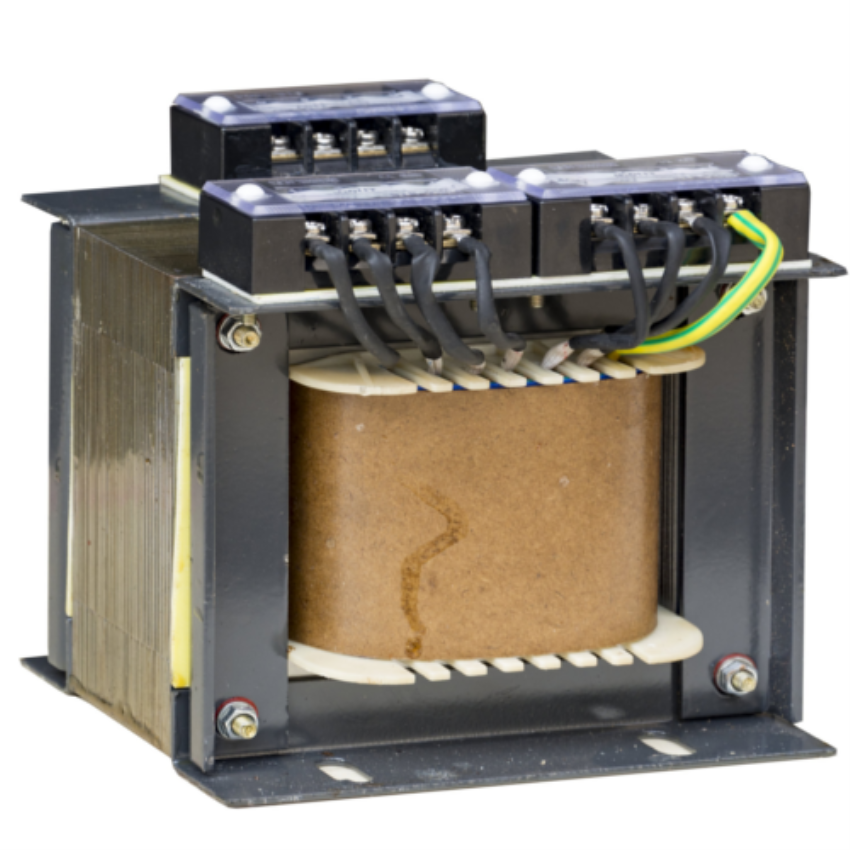
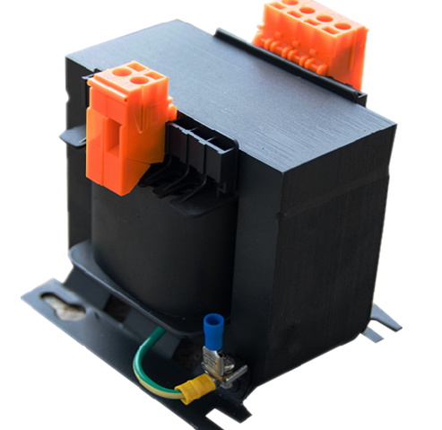
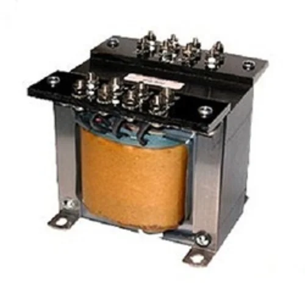
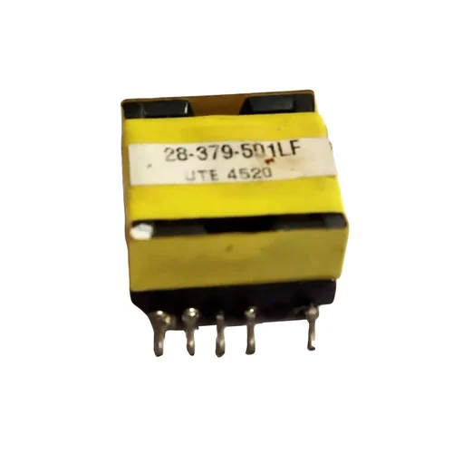

Welcome to ElectroSpecs | Explore Electronics Components | Learn & Build 🚀

SINGLE PHASE STEP DOWN TRANSFORMER

THREE PHASE STEP DOWN TRANSFORMER
AUTO STEP DOWN TRANSFORMER (AUTOTRANSFORMER TYPE)

ISOLATION STEP DOWN TRANSFORMER

HIGH FREQUENCY STEP DOWN TRANSFORMER